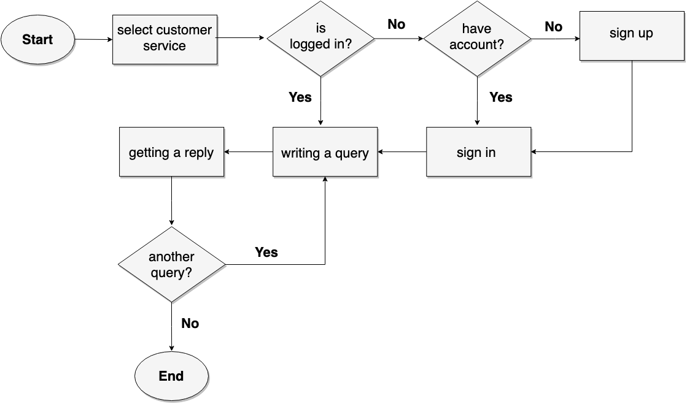

Pets Zone App User Experince Overview:
The process of enhancing user satisfaction with a Pets Zone App by understanding the usability, accessibility, and pleasure provided in the interaction with the App which offer pet home services to pet parents.
Technologies :
Technologies used to Design the app.
- Sketch: Was used to build the Wireframe.
- Illustrator: Was used for Designing and Branding.
- Invision: Was used for prototyping
Brain Storming :


Problem statement :
Pets owners need a way to get pets home service, because it makes taking care of pets at home easier.
Competitive Analysis :
- Feature Inventory Comparison
- Brand Matrix
Our Competitors:
- PetCo
- PetCoash
- PetSmart
Summary:
- Most competitor have pet supplies and online services.
- Consultation is rare service.
- Most competitor have Grooming and medical health service, but few have home services.
- Pet hotels are available; however, it's limited.
Insight of what We discover:
Building an app that can provide home services such as grooming, medical health, pet supplies delivery and consultation.
User Research:
Research Plan
- Goals:
- To discover pet owners needs with their pets
- How value is the pet to their owners?
- How extremes pet owners did to their pets?
- How they are related to their pets?
- How they take care of their pets?
- Target Audience:
- Pets owners
- People who have full time jobs
- 18- 40 years old
- Five area or topics that you could ask about:
- Pet Supplies
- Medical Health
- Grooming
- Consultation
- Pet Hotel
Interview Questions
Hello, my name is ___________. I would like to interview you regarding to pet services. I would like to understand your experience while raising a pet.
- User General Information
- What is your name?
- What kind of pet do you have?
- How many do you have?
- Is your cat/dog a she or he?
- Can you tell me their names?
- For how long do you have them?
- Grooming Service
-
Tell me how was your experience with grooming services?
- Tell me about requesting grooming home services?
- Tell me about the environment of the grooming salon?
- What about the staff can you tell me more about it?
- Can you tell me about the price experience?
- Medical Health and Consultation Service
-
What would you do if your pet gets sick or have an injection to take?
- Tell me about having vet in wheels?
- Tell me about the environment at the hospital or the vet in wheels?
- What about the staff can you tell me more about it?
- Can you tell me about the price experience?
- Tell me about a situation that your consultee someone about your pet health?
- How did you get that consultation?
- Who were that someone your consultee? Why did consultee him/her?
- Pet Supplies Service
-
How do you get your pet supplies?
- Tell me about ordering it online
- Can you tell me about your experience in ordering or getting your pet supplies?
- What about the availability of what you are looking for?
- Can you tell me about the price experience?
- Hoteling Service
-
How do you deal with your pet when you have to travel?
- Tell me about trying pet hotel?
- what would be the main concern with this service?
- Tell me about the environment of the hotel?
- What about the staff can you tell me more about it?
- Can you tell me about the price experience?
- General Questions
- What was the most difficult situation you had to face with your pet?
- What your ideal service looks like? Why?
- What is the most important service to you? Why?
- Do you have any question you would like to ask? Would you like to add any comment?
Now let’s talk about services you may or may not use to your pet.
Synthesizing User Research:
- Affinity Mapping
- Pet owners want to have High quality services with lower cost.
- Pet owners want to get pet supplies faster and with lower cost.
- Pet owners want more qualified staff with safe and good environment.
- Pet owners want an easy consultation because it is difficult to find.
- Pet owners need more pet home services because carrying pet around sometimes it’s hard.
- User Personas
- Customer Journey Mapping

Insight:
Defining User Goals
Primary User Goals
How might we make caring of pets is easy.
Specific:
- How might we make a better home service?
- How might we provide an easy consultation?
- How might we offer high quality services?
- How might we offer low price services?
- How might we help pet owner to find safe environment?
- How might we provide professional staff?
- How might we provide faster and unlimited supplies?
Problem Statements and Hypothesis:
- Problem Statements
- Hypothesis:
Pets owners need a way to get pets home service, because it makes caring pets at home easier.
We believe that by providing high quality services with low prices and qualified staff for pet owners we will achieve happy pets’ owners. We will know this to be true when we have growing business, more users requesting home services by 10%.
Feature Prioritization and Product Vision:
- Features
- Home Medical
- Emergency any time.
- Schedule a vet in wheel.
- Search for specific vet in wheel.
- Browse vet in wheel.
- Home Grooming
- Schedule a grooming at home.
- Search for specific groomer.
- Browse grooming salons.
- Consultation
- Search for specific medical topic.
- Ask questions.
- Browse recent questions.
- Chat with a vet.
- Pet Supplies
- Search for specific product or supplies.
- Browse the supplies.
- Ordering supplies.
- Extra
- Filtering.
- View Cart.
- Notification
- Add a rate and view rating.
- Customer services.
- Add pets
- View questions asked.
- View requested.
- Prioritize Features
- Search for specific product or supplies.
- Browse the supplies.
- Ordering supplies.
- Filtering.
- View Cart.
- Customer services.
- View orders.
- Notification.
- Prioritize
- Ordering supplies.
- View products.
- Search products.
- Filtering.
- Provide Customer service.
- Receiving Notification.
- View cart.
- Evaluate the product.
- View the rate.
- View my orders.
- View favorite list.

Pet Supplies
Product Vision
For Pets owners who are taking care of pets throughout their life, Pets zone provides home services that helps pet owners lives easier with high quality and low-price services, unlike, Aleef and Pwasplace, our product will have what your pet deserves.
Paper Prototyping and Usability Testing:
- First Paper prototyping
- Never used the menu bar (hamburger).
- Search never used in the home for some users and confused by others.
- User didn’t know how to add several quantities of the product.
- User was stuck in the filter there was no close or apply.
- There was no back button.
- The user wanted to know the total price in cart.
- User was confused in searching because it was in order, payment and order confirmation pages.
- Second Paper prototyping
- User wanted to know product rating
- User asked a question related to the tracking number.
- User wanted to have a categories page before the products page.
- User wanted coupons.
- User wanted to know the quantities in order page.
- Users didn’t know which page they are in.
- User Feedback:
- User Feedback:
Prototyping and Usability Testing:
- Prototyping
- Too many products next to each other which user can’t click the buttons
- The user confused with the plus icon in adding to the cart and the adding quantity.
- Video Prototyping
- User Feedback:
Information Architecture:
Storyboarding and User Flows
- Pet Supplies
- Customer Service 
- Medical Service
- Grooming Service

Sitemap
Final Prototyping:
Future Plan:
- Add Consultation
- Add Medical Home Services
- Add Hotel Home Services
Design Process:
The user experience Process was divided through team members. All team members tried each process equaliy The Wireframe and Protytping was made by Sara Daghustanit. The Design was made by Anmar Abubaker.
Team Members:
- Product Manager: Sara Daghustani
- Design lead: Anmar Abubaker
- Research lead: Ghofran Aledrisi
- Presentation lead: Eyad Mufti
2019
Pets owners